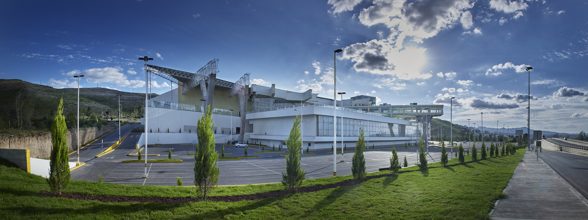
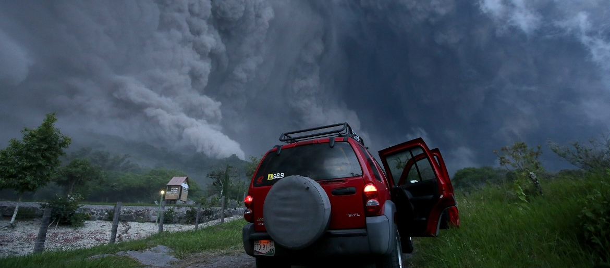
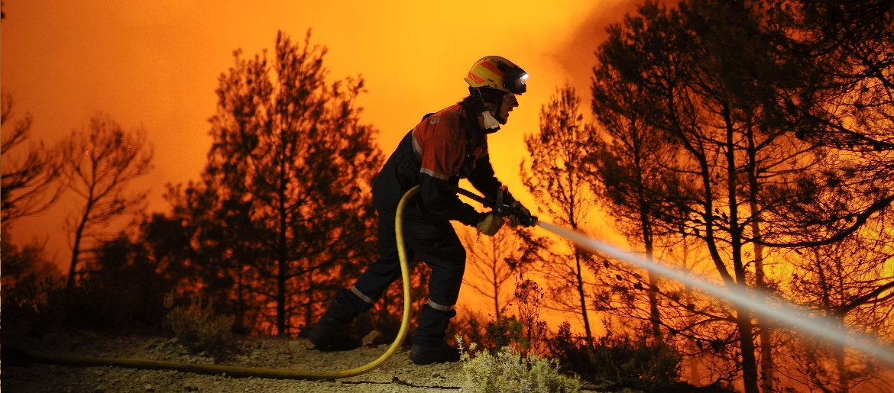
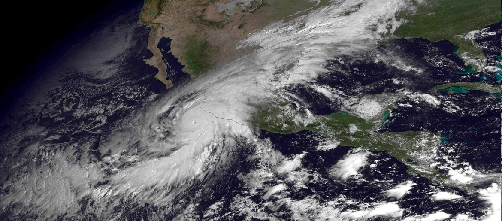
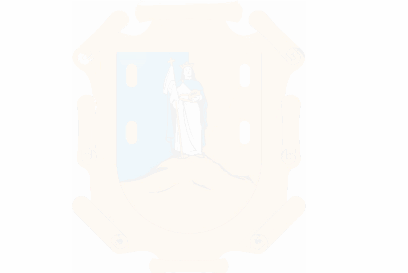

III Convención Nacional de Protección Civil
Falta para el evento
09 - 11 Noviembre
Dias Horas Min.




09 - 11 Noviembre • San Luís Potosí, MX
Uno de los objetivos primordiales de esta Convención Nacional, es centrar los esfuerzos en las amenazas naturales y humanas, el entendimiento de los riesgos ambientales, tecnológicos y biológicos que se ciñen sobre el país.

Juntos podemos más
“Hay que buscar el como sí de las cosas para seguir avanzando en México”
José María Tapia Franco
Director General
Para la Gestión de Riesgos
Marco de Sendai: lecciones aprendidas y retos para el futuro
Asistencia humanitaria y atención a migrantes, turistas y extranjeros afectados por desastres
Comunidades y Ciudades Resilientes
La vigilancia epidemiológica en México ...
San Luís Potosí · 2016